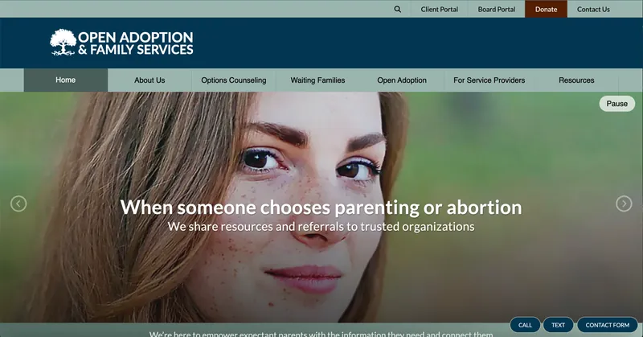
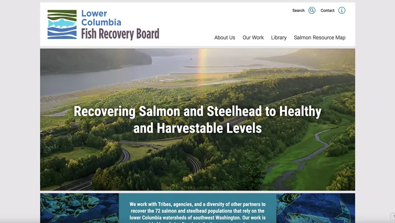
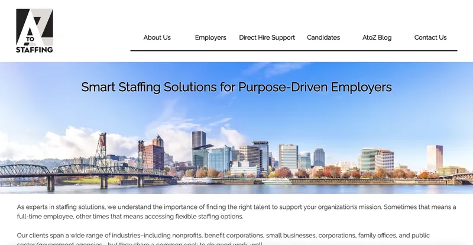
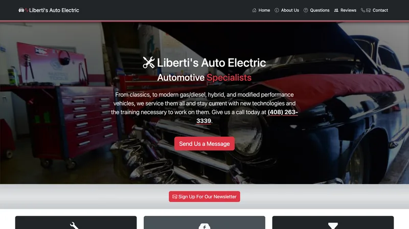

About Me
Web developer and digital consultant with expertise in front-end development, project management, and technology solutions for businesses and nonprofits. Skilled at translating complex problems into actionable solutions, optimizing team workflows, and delivering engaging user experiences through innovative web solutions.
Experienced in building websites from the ground up using custom HTML and CSS, along with CMS platforms including ExpressionEngine, Wix Editor X, Webflow, and Shopify, and additional experience with Joomla and WordPress. Focused on creating accessible, responsive websites and finding practical solutions to technical and workflow challenges. Experience founding and operating an independent e-commerce venture has also provided firsthand insight into the practical needs and challenges of running a small business.
Recent Experience
Founder & Web Developer, Self-Employed | June 2025 - Present | (Remote)
Two separate ventures under one roof: a freelance web development practice serving small-business clients, and an independently owned and operated e-commerce business.
Freelance Web Development
- Build custom-coded and CMS-based websites for small-business clients, recommending the platform that fits each client's goals, audience, and budget (custom code, Shopify, WordPress, or another system) rather than defaulting to one toolset or a personal preference.
- Design and test every build for WCAG 2.1 conformance, cross-checking across multiple independent accessibility tools rather than trusting a single automated scan, alongside manual review of color contrast, alternative text, form labeling, keyboard navigation, and mobile tap-target sizing. WebAIM's 2026 study found detectable failures of this kind on roughly 96% of home pages, and they are an increasingly common trigger for accessibility demand letters against small businesses.
- Develop mobile-first, responsive layouts and verify them on real phones, tablets, and browsers rather than a single simulator, since a device-specific bug or a slow mobile load turns real visitors away before a page finishes rendering.
- Favor clean semantic HTML, genuine performance and image-optimization testing, and correct sitemap, robots, and descriptive meta-tag configuration over page-builder bloat, so sites load quickly and are indexed correctly from day one.
- Diagnose issues to their root cause and fix the underlying problem rather than masking symptoms with accessibility overlays or one-off visual patches. It is the same diagnostic discipline I bring as an ASE-certified automotive technician: never trust one reading in isolation, and never paper over a symptom without understanding the cause.
Independent E-Commerce Venture
- Built and customized a Shopify storefront using Liquid, custom filtering and taxonomy architecture, and metafield-driven product data structures.
- Led performance and accessibility optimization on the storefront, including Lighthouse auditing, image-compression workflows, color-contrast testing, and WCAG-compliant mobile tap-target sizing via custom Liquid edits.
- Manage multi-channel sales operations, including platform-specific pricing strategy, cross-listing workflows, shipping and fulfillment integration, and domain/DNS management.
- Manage inventory and product photography, using AI-assisted workflows and graphics-editing software to help shape final product designs, alongside creative direction for brand identity and marketing materials.
- Established and manage core business operations independently, including registered agent and privacy protection, licensing, tax compliance, and business banking.
Web Developer and Consultant at | March 2024 - June 2025 | (Remote)
- Built and launched responsive websites in ExpressionEngine, an enterprise CMS, for nonprofit clients, combining CMS templating (tags, conditional logic, custom fields) with custom front-end development (HTML, CSS, JavaScript), MachForm integration, and server-side tasks such as DNS, subdomain, and TLS certificate configuration.
- Consulted with clients on project scope, features, and web-publishing best practices, translating stakeholder goals and designers' artwork into build-ready specifications.
- Built web accessibility into the foundation of every project (semantic structure, color contrast, keyboard operability, and screen-reader behavior) rather than bolting it on afterward, alongside organic SEO and performance work, then validated every site through peer code review and multiple independent accessibility, markup, and speed tools before launch.
- Applied lean, low-bandwidth development practices, a lightweight CSS framework, lazy loading, image optimization, and minimal scripting, for faster mobile performance and a smaller energy footprint.
- Delivered full site builds for Open Adoption & Family Services, the Lower Columbia Fish Recovery Board, and AtoZ Staffing, each responsive across phone, tablet, and desktop.
- Trained content managers and provided ongoing content editing and troubleshooting across more than a dozen active nonprofit client sites, including Returning Veterans Project, Portland Youth Philharmonic, the Coalition of Community Health Clinics, and REACH CDC, spanning healthcare, veterans services, crisis support, affordable housing, and arts.
Website & Technology Manager at Seaside | Jan 2023 - July 2023 | (Remote from Seattle, WA to Gloucester, MA)
- Led a Web & Tech team of 5-8, overhauling and restructuring the department following approximately six months without dedicated leadership, implementing Agile and Scrum frameworks along with kanban to establish organized workflows and a consistent delivery cadence.
- Served as a Department Manager, Scrum Master, Product Owner, Front-end Web Developer, Project Manager, and a liaison between different departments in order to facilitate and support the needs of a diverse, globally remote team for a large non-profit organization.
- Rapidly and efficiently acquired proficiency in using a diverse range of software and tools, such as Trello, Wix Editor X, Zapier, Google Workspaces, Miro, Figma, Canva, MailerLite, Little Green Light, and Airtable, among other applications.
- Guided and mentored my team in implementing responsive web design best practices and effectively utilizing tools to accomplish tasks.
- Collaborated with stakeholders to perform heuristic evaluations, effectively identifying user needs and pain points, then analyzed the feedback to implement targeted improvements and innovative design solutions.
For additional roles and detailed responsibilities, visit my Resume .
Technical Skills
Web Development & Platforms
- HTML
- CSS
- ExpressionEngine
- Joomla!
- WordPress
- Wix Editor X
- Webflow
- Shopify (Liquid)
- YAML CSS Framework
- Bootstrap
Hosting, Domains & SEO
- Domain & DNS Management
- Namecheap
- cPanel
- SEO
- Google Analytics
- GitHub Pages
- SSL/HTTPS Configuration
Development & Databases
- JavaScript
- jQuery
- PHP
- SQL
- MySQL/RDBMS
- API Integrations
Accessibility
- WCAG and web accessibility standards
- Lighthouse auditing
- Color-contrast testing
- Mobile tap-target compliance
AI-Assisted Workflows
- Claude, ChatGPT, Gemini, and GitHub Copilot
- Strategic planning and organization
- Content and asset creation
- Code refinement and testing
- Multi-model cross-verification prior to manual review
Design & Creative
- Affinity
- Adobe Photoshop
- Illustrator
- InDesign
- Canva
- Figma
Business & Entrepreneurship
- LLC formation and operations
- E-commerce platform management
- Multi-channel sales strategy
- Tax compliance
- Business Banking
- Licensing & Registration
- Washington State Tax Registration
Agile & Project Management
- Jira
- Trello
- Kanban
- Miro
- Zoom
- Google Workspace
- Airtable
- Scrum Framework
- Backlog Management
Additional Tools
- AWS / Cloud Computing
- Visual Studio Code
- Sublime Text
- Notepad++
- Premiere Pro
- Final Cut Pro
- Little Green Light
- Zapier
- MachForm
- Microsoft Word, Excel, Access, PowerPoint, and Teams
How I Build
A website can look finished on the surface and still have real problems underneath. The design is only part of the finished product. How a site is built and configured affects how quickly it loads, how well it performs in search, how accessible it is, and how it works across different devices and ways of using the web.
Those things are easy to overlook because they aren't always visible to the person who built the site. I don't treat them as optional extras or assume the platform has taken care of them. I test them, find problems, and fix them as part of the build.
Results from the most recent audit of this portfolio website:
Google Lighthouse
- 99 Performance
- 100 Accessibility
- 100 Best Practices
- 100 SEO
WebAIM WAVE
- 0 errors
- 0 contrast errors
- 0 alerts
Measured with Google Lighthouse and WebAIM WAVE. Scores vary slightly between runs and shift as a site is updated; these reflect the most recent check, not a fixed guarantee.
Every build includes:
- Accessibility testing against WCAG 2.1, checked with multiple independent tools and by hand: keyboard navigation, screen-reader behavior, color contrast, focus order, and tap-target sizing.
- Performance and Core Web Vitals: compressed and correctly sized images, minimal render-blocking code, third-party scripts deferred, tested on real devices.
- Search fundamentals: semantic HTML structure, descriptive metadata and link-preview tags, correct sitemap and robots configuration.
- The right platform for the client, custom-coded or a CMS such as WordPress, Shopify, or ExpressionEngine, then built and tuned to these standards rather than left on its defaults, so the site stays fast and maintainable after launch.
Automated scores are a floor, not a finish line. They catch roughly a third of accessibility problems; the rest is manual work. But a site that cannot clear the floor is losing people before anyone notices.
Website Development & Client Consultation
Built while employed at a nonprofit-focused web development and consultancy agency.

Open Adoption & Family Services
Hand-coded a custom website for Open Adoption & Family Services, bringing a third-party designer's vision to life. The project included developing unique site features, ensuring web accessibility, and training staff for confident site management. The result is a professional, sustainable online presence that supports the organization's mission of connecting children with loving families through open adoption.
Achieves a perfect 100 Lighthouse Accessibility score and 100 SEO score.

Lower Columbia Fish Recovery Board
Delivered consulting and web development for the Lower Columbia Fish Recovery Board, transforming a teammate’s design into a responsive, accessible website. The new site enhances outreach by informing the public and connecting with new audiences, while also supporting the organization’s mission to restore salmon populations, protect clean water, and strengthen the long-term health of southwest Washington’s forests and communities.
Scores 98 Lighthouse Accessibility and a perfect 100 in both SEO and Best Practices.

AtoZ Staffing
Provided consulting and web development for AtoZ Staffing and its sister site, Nonprofit Professionals Now (NPN). Built responsive, accessible websites that highlight staffing services, streamline job postings, and improve candidate resources. The finished sites strengthen connections between nonprofits, benefit corporations, and job seekers, supporting both organizations mission of delivering staffing solutions tailored to the needs of mission-driven employers and professionals.
Scores 92 Lighthouse Accessibility and a perfect 100 SEO, balanced against the client's specific design and functionality requirements.
Independent & Freelance Projects
Dino Game
Made a simple game using HTML, CSS, and JavaScript. This is similar to Google's dino game
(chrome://dino
). To play, just press any key to jump over incoming objects.

Liberti's Auto Electric
A complete, responsive website designed and built for Liberti's Auto Electric, an automotive shop I previously worked at. Developed with Bootstrap 5.3 in close collaboration with the shop owner, the site pairs clear, efficient navigation with enough visual character to reflect the shop itself. It now serves as the business's live website, and nearly all of the photography on it is my own, including a few shots of me working in the shop.

Quiz App
This is a quick quiz app using HTML CSS and JavaScript with randomly generated questions populated from Open Trivia Database (https://opentdb.com/). The user can save their score and try to beat it the next time around. This was created from a tutorial and will be replaced with another project that I will create myself in the future but was fun to code and follow along while gaining more hands-on experience.